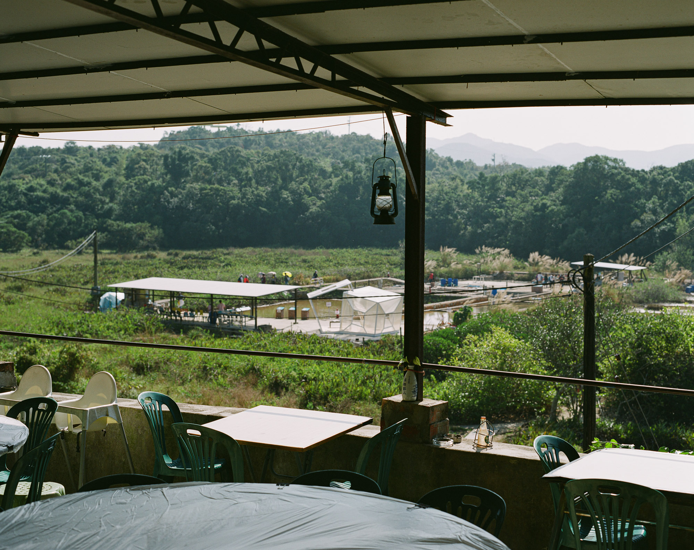
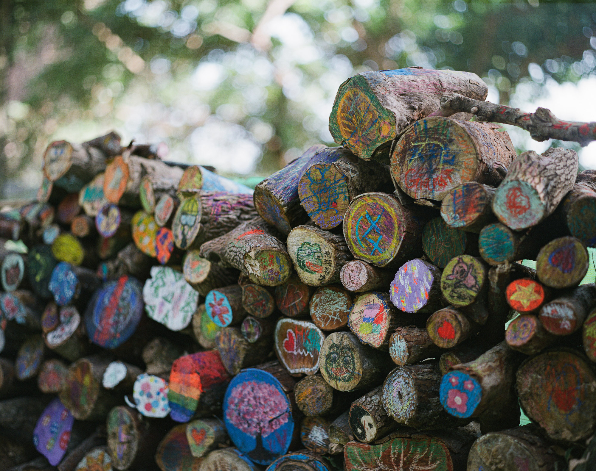

前年第一次去西貢小島鹽田梓（或稱鹽田仔），對島上歷史和風光印象深刻。去年年尾適逢鹽田梓藝術節再次去了這個小島郊遊。鹽田仔的歷史我並沒有深入研究，腦海中只有幾個關鍵字：「天主教」、「客家村」和「鹽田」。
島如其名，鹽田仔的島民有部分是以曬鹽維生。鹽田已經荒廢多年，直至村民在2010年代初到台南鹽場學習，近幾年才恢復產鹽。香港本地產鹽在2020年好像有點匪而所思，不過村民是由保育、文化角度出發才恢復本地產鹽，並不是要售賣出口這些香港製造的海鹽。
鹽田梓藝術節也是鹽田梓島民發展文化、教育、保育其中一個比較大型的項目，有人更以日本的瀨戶內藝術祭作比喻。老實說，論藝術作品數量、質素和藝術節的規模，當然是蚊髀同牛髀。不過由西貢碼頭搭船去鹽田梓看藝術節，是一個非常獨特的體驗，在香港可以做到這一步，已經非常難得。希望每一年的鹽田梓藝術節可以越搞越好。


參考閱讀
鹽田梓村歷史 https://yimtintsai.com/home/yttvillage/yttvillagehistory/
鹽田梓藝術節 https://www.yimtintsaiartsfestival.hk/index.php?lang=tc